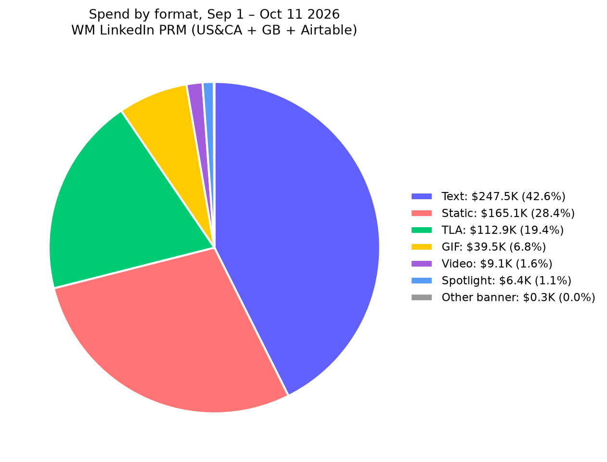
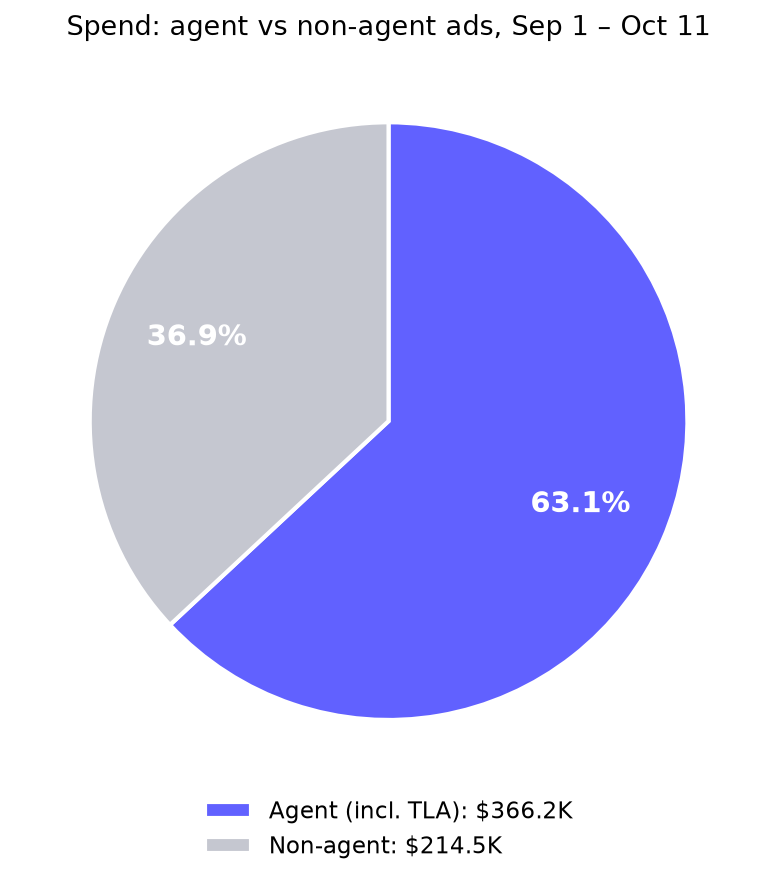
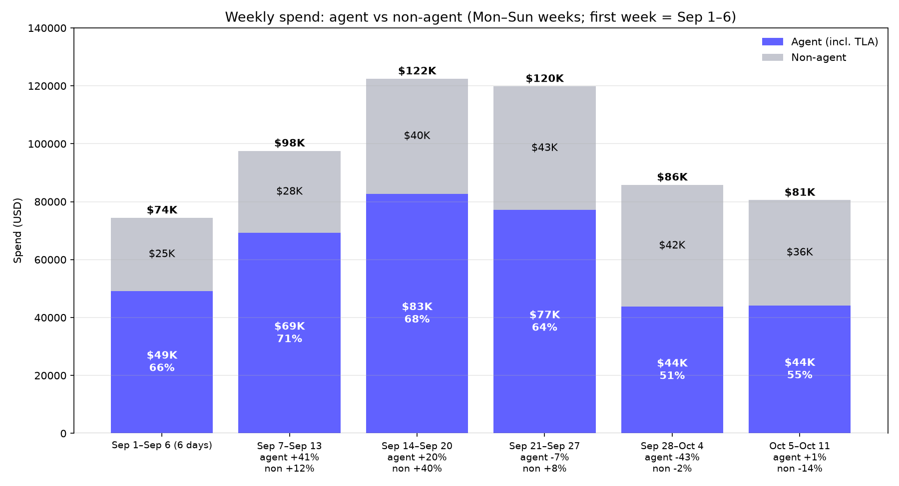
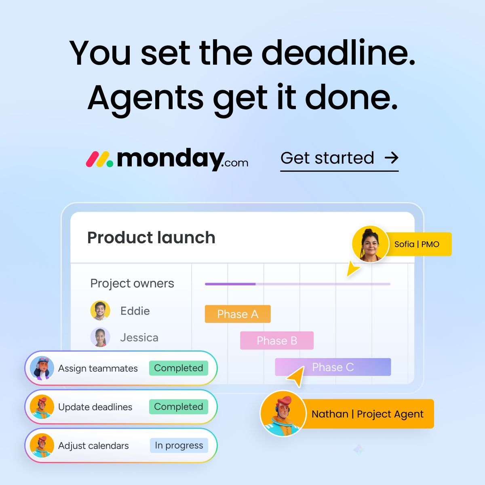
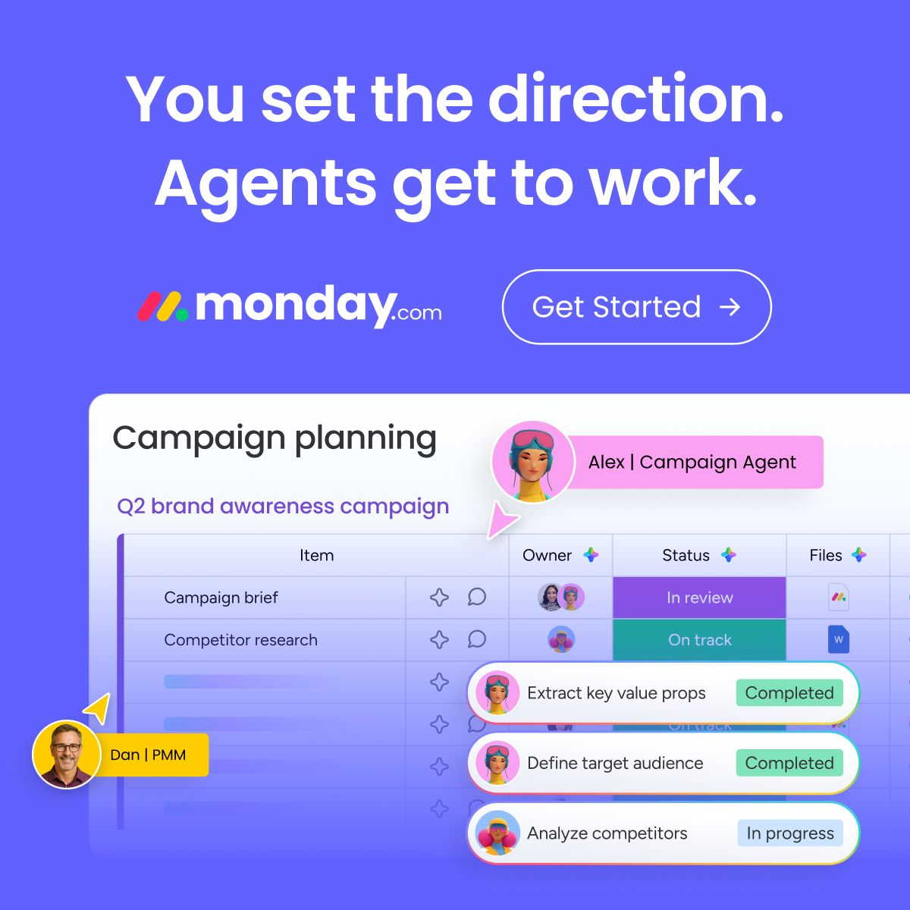
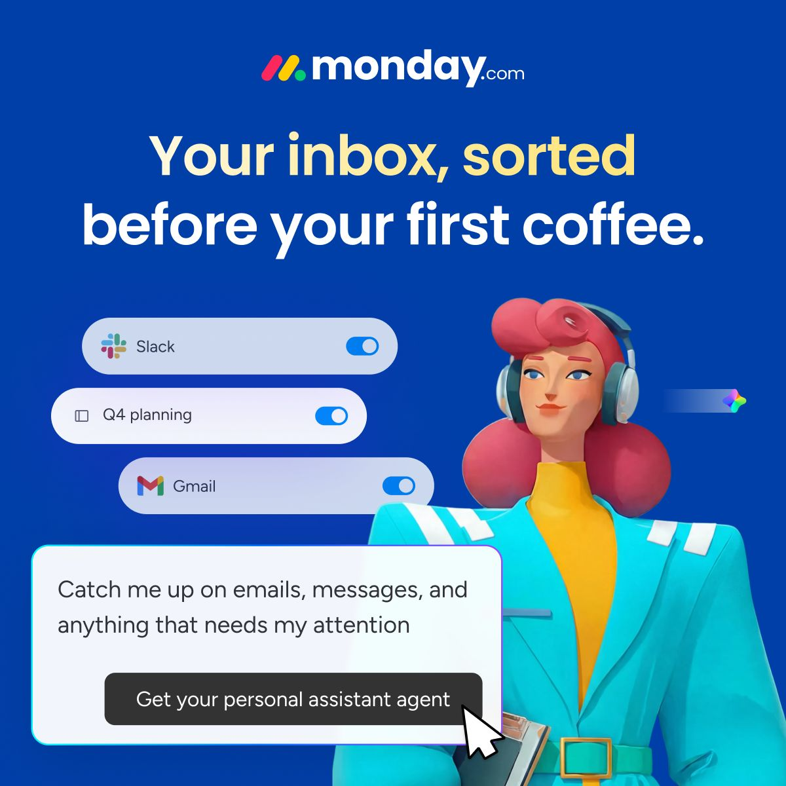
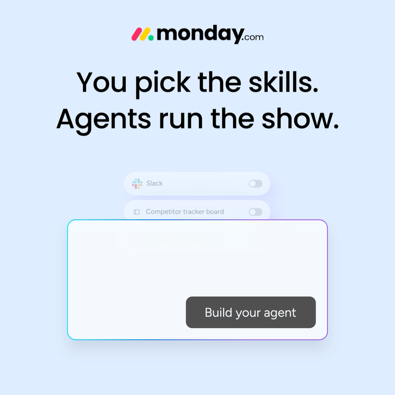
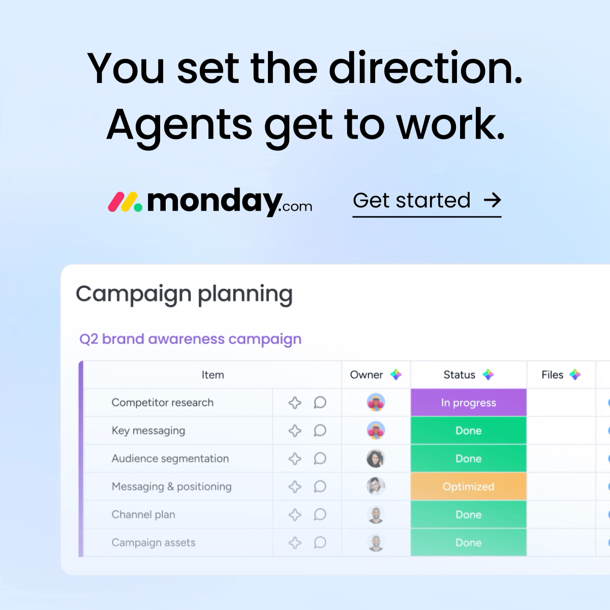
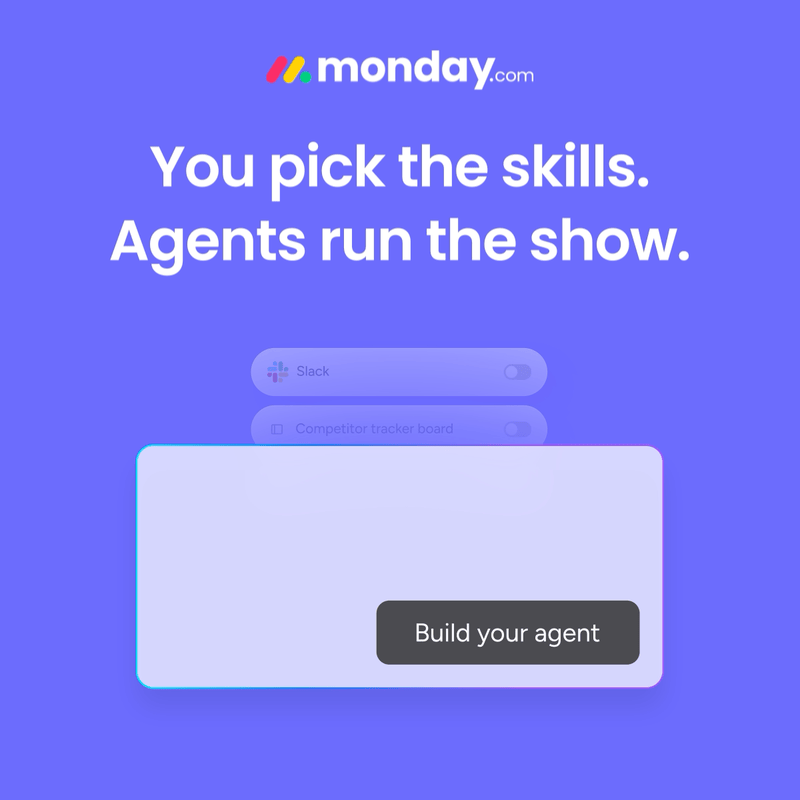
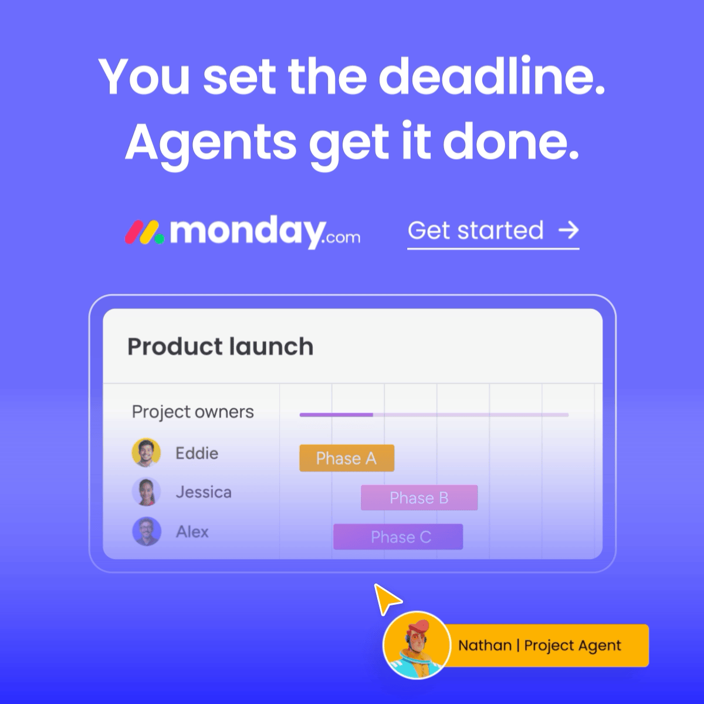

WM LinkedIn PRM: creative analysis, Sep 1 – Oct 11 2026
Source: LinkedIn in-platform (Funnel Gate get_insights, account 507706187), campaign groups 691891854 (US&CA), 1018304264 (GB), 1199048384 (Airtable). 599 creatives with spend. Hard SU = rule 18155186 Hard Signup_CAPI. QE = rule 18155194 (old CAPI QE). New CAPI events (28712650 / 30097442) not used. CPS = spend / Hard SU. Pulled Oct 12 2026.
1. Totals and by country
| Spend | Hard SU | CPS | QE | CPQE | CPM |
|---|
| US (incl. US Airtable) | $400,500 | 1,475 | $272 | 98 | $4,087 | $3.59 |
| GB | $106,404 | 470 | $226 | 43 | $2,475 | $3.74 |
| CA | $14,640 | 42 | $349 | 1 | $14,640 | $4.08 |
| Airtable multi / EMEA | $59,150 | 23 | $2,572 | 1 | $59,150 | $46.25 |
| Total | $580,694 | 2,010 | $289 | 143 | $4,061 | $4.01 |
Airtable campaigns total (all geos, incl. the US Airtable ad sets counted inside US above): $69,025 · 27 Hard SU · CPS $2,556 · 1 QE.
2. Spend by format

Text = text ads · TLA = the 4 thought-leader campaigns (banner + video) · Static / GIF = single-image sponsored content (by the _static / _gif ad name suffix) · Video = non-TLA video · Spotlight = dynamic spotlight. "Other banner" = 1 ad named "test" ($264).
3. Agent vs non-agent

| Spend | Hard SU | CPS | QE | CPQE | CPM |
|---|
| Agent (incl. TLA) | $366,173 | 1,232 | $297 | 97 | $3,775 | $4.13 |
| Non-agent | $214,521 | 778 | $276 | 46 | $4,664 | $3.81 |
Agent = ad name contains "agent" (agent_*, ugc_bambassadors_agent_*) or any TLA ad (all TLA posts are agent posts). Everything else (Airtable, Resurrect, 360_AI, use_case, emotional_*, generic text ads like "Text 1-5") = non-agent.

| Week | Agent | Non-agent | Agent share |
|---|
| Sep 1–Sep 6 (6 days) | $49,195 | $25,243 | 66% |
| Sep 7–Sep 13 | $69,213 | $28,352 | 71% |
| Sep 14–Sep 20 | $82,725 | $39,749 | 68% |
| Sep 21–Sep 27 | $77,089 | $42,773 | 64% |
| Sep 28–Oct 4 | $43,743 | $42,064 | 51% |
| Oct 5–Oct 11 | $44,208 | $36,340 | 55% |
4. Best format: static vs GIF vs video
| Spend | Hard SU | CPS | QE | CPQE | CPM |
|---|
| Static (all ad sets) | $165,078 | 356 | $464 | 40 | $4,127 | $6.05 |
| GIF (all ad sets) | $39,471 | 150 | $263 | 9 | $4,386 | $3.77 |
| Video (all ad sets) | $9,059 | 14 | $647 | 1 | $9,059 | $35.64 |
| Static (excl. LAN) | $72,432 | 65 | $1,114 | 3 | $24,144 | $38.75 |
| GIF (excl. LAN) | $8,509 | 2 | $4,255 | 0 | – | $24.92 |
| Video (excl. LAN) | $9,059 | 14 | $647 | 1 | $9,059 | $35.64 |
Like-for-like (same ad set, same audience): GIF beats static in every LAN ad set where both run.
| Spend | Hard SU | CPS | QE | CPQE | CPM |
|---|
| us-seniority-lp-banner-skills_lan · Static | $45,267 | 256 | $177 | 33 | $1,372 | $1.99 |
| us-seniority-lp-banner-skills_lan · GIF | $18,969 | 127 | $149 | 6 | $3,162 | $2.13 |
| gb-job_function-lp-banner-mop_lan · Static | $8,558 | 21 | $408 | 3 | $2,853 | $6.37 |
| gb-job_function-lp-banner-mop_lan · GIF | $5,782 | 19 | $304 | 3 | $1,927 | $6.36 |
| us-job_function-lp-banner-mop_lan · Static | $8,204 | 6 | $1,367 | 1 | $8,204 | $10.75 |
| us-job_function-lp-banner-mop_lan · GIF | $2,790 | 1 | $2,790 | 0 | – | $10.91 |
| us-seniority-lp-banner-skills · Static | $8,934 | 2 | $4,467 | 1 | $8,934 | $26.05 |
| us-seniority-lp-banner-skills · GIF | $2,845 | 1 | $2,845 | 0 | – | $26.39 |
5. Top 4 static ads
Grouped by ad name across ad sets, min $2K spend, ranked by CPS. TLA excluded (own format). Media shown is from the highest-spend copy of the ad.

agent_workagent_builder_deadline_light_static
CPS $127Hard SU 18Spend $2,291CPQE –CPM $2.60
5 ads in: gb-job_function-lp-banner-mop_lan, us-seniority-lp-banner-skills, us-seniority-lp-banner-skills_lan, us-seniority-lp-banner-tla_audience
With the AI-powered agents on monday.com, you can set the direction and let your Digital Workforce handle the repetitive tasks. It’s the easiest way to keep all your work moving forward, automatically.…

agent_aimarketing_campaign-planning_brief_dark_static
CPS $165Hard SU 52Spend $8,568CPQE $2,856CPM $2.14
4 ads in: us-job_function-lp-banner-mop_lan, us-seniority-lp-banner-skills_lan, us-seniority-lp-banner-tla_audience
Connect marketing efforts to business results. On monday.com, you set the strategy and AI agents execute the work across your department. This creates total visibility, empowering you to prove your team's results and make decisions that drive business growth.
…

agent_aipmo_generic_usersagents_static
CPS $194Hard SU 28Spend $5,429CPQE $2,715CPM $2.56
4 ads in: gb-job_function-lp-banner-mop_lan, us-job_function-lp-banner-mop_lan, us-seniority-lp-banner-skills, us-seniority-lp-banner-skills_lan
Supercharge your PMO. On monday.com, project managers and AI agents collaborate to mitigate risks and move complex portfolios forward, faster.…

agent_general_generic_horizontal_inbox-agent_static
CPS $201Hard SU 27Spend $5,418CPQE $2,709CPM $2.58
5 ads in: gb-job_function-lp-banner-mop_lan, us-job_function-lp-banner-mop_lan, us-seniority-lp-banner-skills, us-seniority-lp-banner-skills_lan, us-seniority-lp-banner-tla_audience
Repetitive tasks slow down your real work. With The AI Work Space from monday.com, people and agents collaborate as one team. Free your team to focus on what matters.…
Top 4 GIF ads

agent_builder_builder_light_gif
CPS $143Hard SU 16Spend $2,284CPQE –CPM $3.41
6 ads in: gb-job_function-lp-banner-mop_lan, us-job_function-lp-banner-mop_lan, us-seniority-lp-banner-skills, us-seniority-lp-banner-skills_lan, us-seniority-lp-banner-tla_audience
Imagine an agent that preps your weekly reports or organizes customer feedback automatically. That’s the idea.
On monday.com, people and agents collaborate as one team to take on any project. It’s all your work, now moving faster.…

agent_aimarketing_campaign-planning_brief_light_gif
CPS $163Hard SU 15Spend $2,442CPQE –CPM $2.69
2 ads in: us-job_function-lp-banner-mop_lan, us-seniority-lp-banner-skills_lan
Connect marketing efforts to business results. On monday.com, you set the strategy and AI agents execute the work across your department. This creates total visibility, empowering you to prove your team's results and make decisions that drive business growth.
…

agent_builder_builder_dark_gif
CPS $190Hard SU 13Spend $2,468CPQE –CPM $2.60
4 ads in: gb-job_function-lp-banner-mop_lan, us-job_function-lp-banner-mop_lan, us-seniority-lp-banner-skills, us-seniority-lp-banner-skills_lan
Imagine an agent that preps your weekly reports or organizes customer feedback automatically. That’s the idea.
On monday.com, people and agents collaborate as one team to take on any project. It’s all your work, now moving faster.…

agent_workagent_builder_deadline_dark_gif
CPS $200Hard SU 14Spend $2,805CPQE $1,403CPM $2.43
4 ads in: gb-job_function-lp-banner-mop_lan, us-job_function-lp-banner-mop_lan, us-seniority-lp-banner-skills, us-seniority-lp-banner-skills_lan
With the AI-powered agents on monday.com, you can set the direction and let your Digital Workforce handle the repetitive tasks. It’s the easiest way to keep all your work moving forward, automatically.…